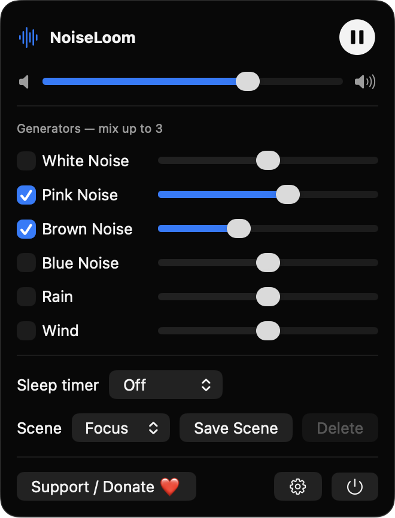
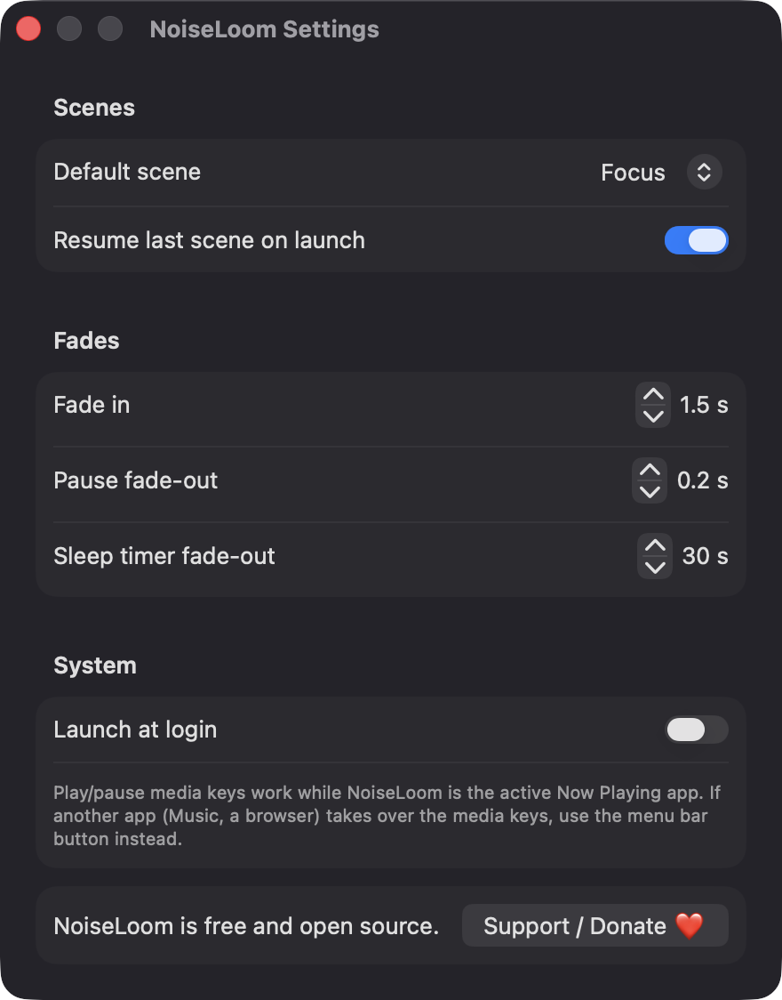

Mix up to three generators
Choose from white, pink, brown and blue noise, plus rain and wind textures. Each has its own enable checkbox and volume slider, with a master volume on top.
Open source · macOS 14+ · Universal binary · Audio
NoiseLoom synthesizes white, pink and brown noise, rain and wind live on your Mac. Click the waveform icon in the menu bar, or press the play/pause media key.
Free & MIT licensed · Apple Silicon & Intel · Latest release

Features
Six generators, a sleep timer and saved scenes, all synthesized on your Mac with no sound files or network.
Choose from white, pink, brown and blue noise, plus rain and wind textures. Each has its own enable checkbox and volume slider, with a master volume on top.
Pick Off, 15, 30, 60 or 120 minutes and watch the live countdown. The sound fades out at the end, and the countdown stays correct across system sleep.
Start with the built-in Focus, Sleep and Rain scenes, or save your own named mixes and delete them later.
Volume changes are smoothed per sample, pausing fades briefly, and the mix is soft-limited to prevent clipping. Playback restarts if you unplug headphones.
Play and pause with the system media keys, and see NoiseLoom in the Now Playing controls.
A compact panel holds all controls, and the waveform icon animates while playing. Settings cover fade durations, resume on launch and launch at login.
Screenshots

Install
NoiseLoom is open source and not notarized with a paid Apple Developer ID, so macOS needs one extra step the first time.
xattr -cr /Applications/NoiseLoom.app
Download
Free, forever. Built for macOS 14 Sonoma or newer, Apple Silicon and Intel.
Not notarized: on first launch right-click NoiseLoom.app → Open.
FAQ
Yes. NoiseLoom is free to use and released under the MIT license, with the full source on GitHub. There are no accounts, subscriptions or in-app purchases, and an optional Ko-fi button is the only way to support it.
No. NoiseLoom does not use Accessibility, Screen Recording, the microphone, the camera, location or the network, and audio is only played out, never recorded. Launch at login is optional and may appear under System Settings, General, Login Items.
Only on your Mac. Your saved scenes and settings are stored locally in UserDefaults as JSON, and nothing is sent anywhere.
Notarization requires a paid Apple Developer account, and NoiseLoom is a free project. Right-click the app and choose Open once to launch it, or build it from source with Xcode.
Support ❤️
NoiseLoom is a free, open-source alternative to paid utilities. If it earns a spot on your Mac, a coffee keeps the updates coming.
☕ Support Or on Ko-fi